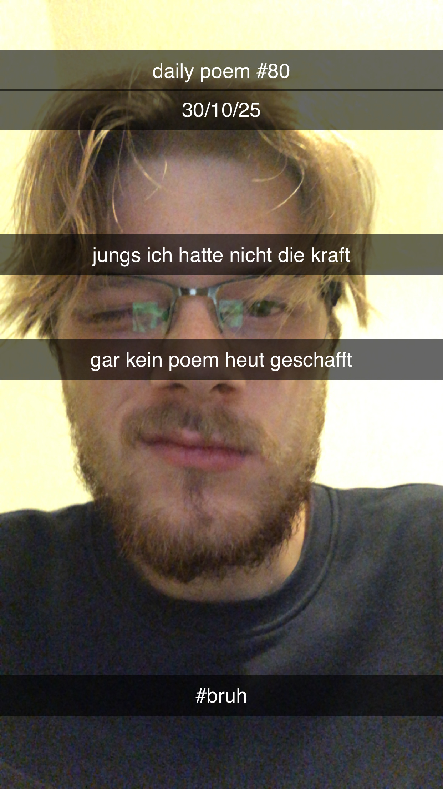

Jungs, ich hatte nicht die Kraft –
Gar kein Poem heut' geschafft.

Anmerkungen
da ich erst sehr spät mit dem richtigen archivieren angefangen hab, kann ich bei vielen früheren sachen nicht mehr mit sicherheit sagen, ob so tags wie "under the influence" zutreffen oder nicht, aber diesen ein-auge-fokus auf dem dazugehörigen bild erkenne ich auf 5km gegen den wind
Anmerkungen
da ich erst sehr spät mit dem richtigen archivieren angefangen hab, kann ich bei vielen früheren sachen nicht mehr mit sicherheit sagen, ob so tags wie "under the influence" zutreffen oder nicht, aber diesen ein-auge-fokus auf dem dazugehörigen bild erkenne ich auf 5km gegen den wind